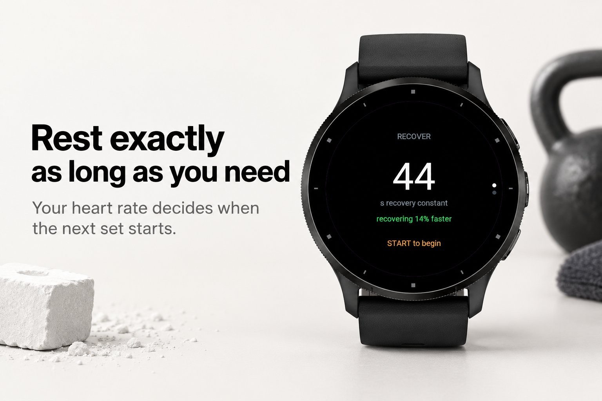
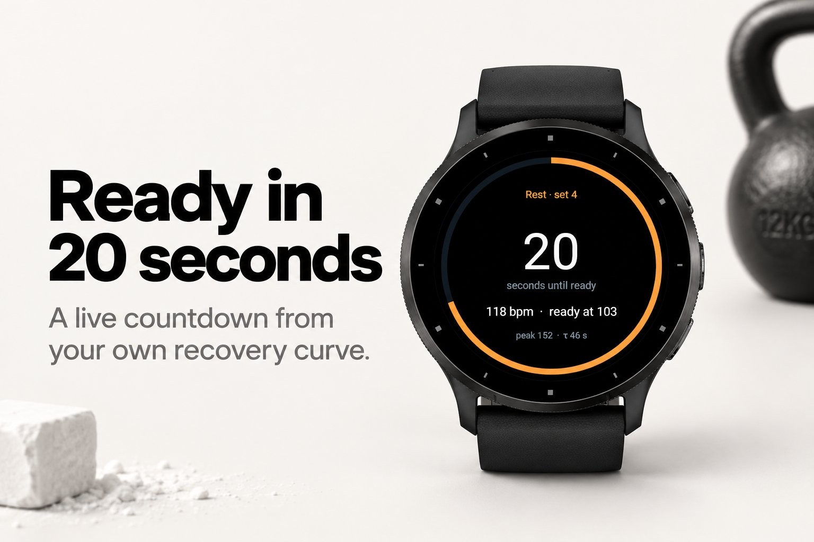
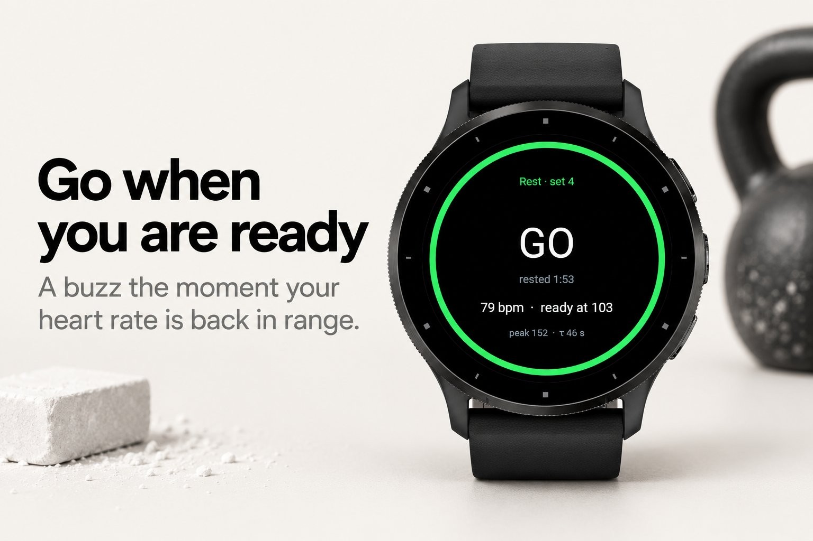
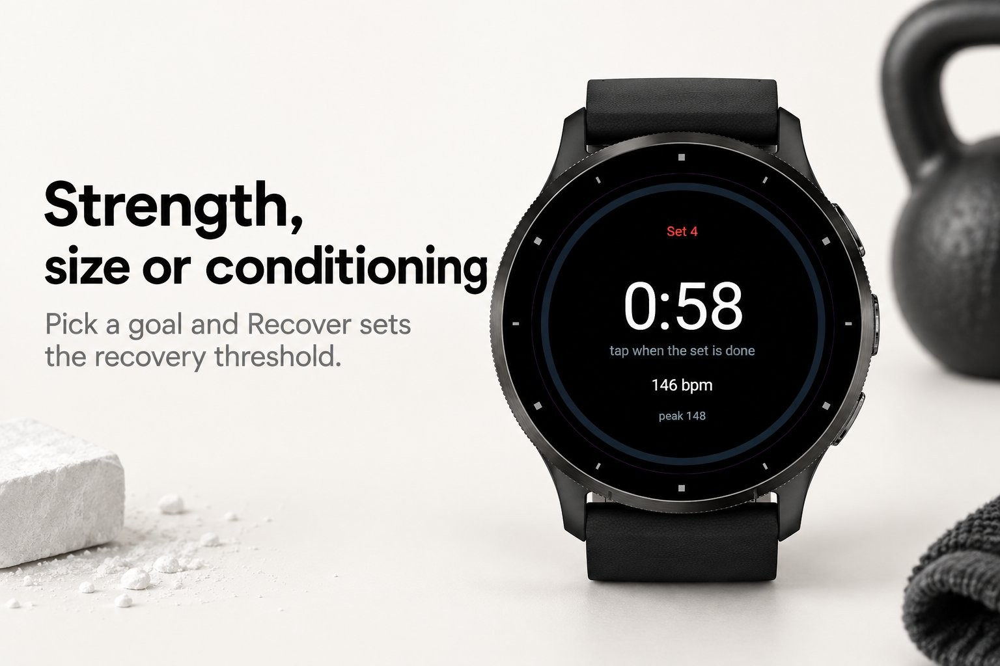
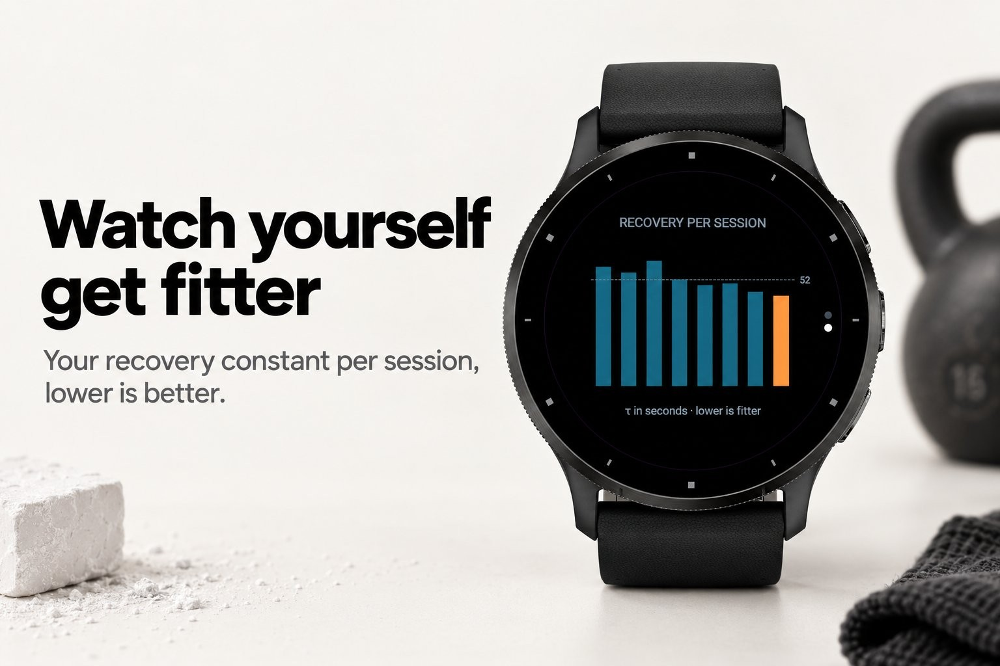

Health & habits · Device app
Rest timer driven by your heart rate.
Submitted to Garmin and awaiting review. The store page opens once it is approved.





Recover replaces the fixed rest timer with one that listens to your heart. After every set it watches your heart rate come down and starts the next set when you are actually recovered, not when an arbitrary 90 seconds are up. Strong lifters rest less, hard sets get more, and a bad day gets the extra time it needs.
Under the hood Recover fits your recovery curve live. From the peak after the set and your resting rate it estimates your recovery constant, the number of seconds it takes your heart rate to fall about two thirds of the way back. That gives a real countdown, a light tap ten seconds out, and a firm buzz when you are ready. Your goal sets the threshold: strength waits until you are nearly fully recovered, hypertrophy goes earlier, conditioning earlier still. Across sessions the constant becomes your fitness score: lower means you recover faster.